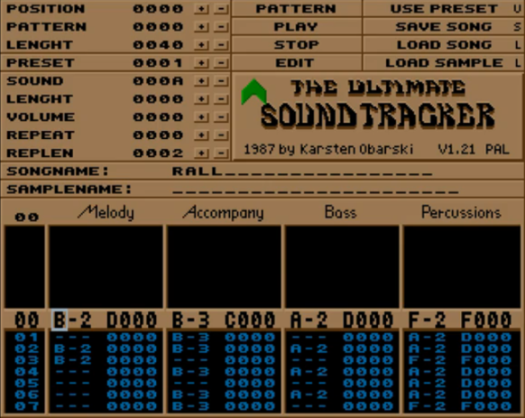
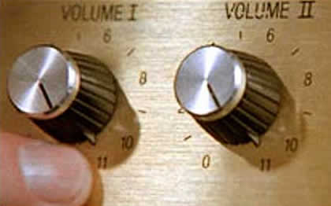

A quick peek at HTML5 Web Audio API
00. Hello
twitter.com/darragh_enright
01. An incomplete history of computer music
1950
CSIRAC is Australia's first digital computer. It is also the first computer ever to be used to create music.
1951
The Ferranti Mark 1 at the University of Manchester is used to create the oldest recorded computer music, including "God save the King" and "Baa Baa Black Sheep"
1957
Max Mathews writes MUSIC at Bell Labs. It's the first computer program for generating digital audio waveforms through direct synthesis.
It is the first in a series of MUSIC-N software, which becomes inspiration for many subsequent computer music applications.
1961
The IBM 7090 is the first computer to "sing" a song called "Daisy Bell"
:o
^197[0-9]$
Development of FM synthesis
And... Probably lots of other really exciting stuff?
1982
Commodore 64 is released. 8-bit computers are starting to become commonplace in the home. Games == music.
1983
MIDI (Music Instrument Digital Interface) Specification is published, defining a protocol to allow music instruments (and eventually computers) to talk to each other
1984
Barry Vercoe creates CSOUND
instr 2
a1 oscil p4, p5, 1 ; p4=amp
out a1 ; p5=freq
endin
f1 0 4096 10 1 ; sine wave
;ins strt dur amp(p4) freq(p5)
i2 0 1 2000 880
i2 1.5 1 4000 440
i2 3 1 8000 220
i2 4.5 1 16000 110
i2 6 1 32000 55
e
1985
Atari ST is released
1987
Commodore Amiga 500 is released. The Amiga quickly becomes a popular platform for Music Tracker software
1989
MIDI sequencer Cubase 1.0 is released on the Atari ST
^199[0-9]$
By now there are tons of freeware/shareware software available on the web.
Stomper Ultra++
HammerHead Rhythm Station
Vaz Plus
Rebirth RB-338
etc.
Present Day
Computer based recording and synthesis is incredibly powerful.
Run a real-time studio environment in a domestic machine: recording, synthesis, effects, mixing etc.
But.. what does this have to do with HTML5?
Not a lot? Most computer music software runs natively, written for high performance, typically in languages like C/C++.
But...
May 23rd, 2012
Google released a Doodle celebrating the 78th (posthumous) birthday of Robert Moog
A playable, recordable Minimoog (moogle?) in your browser!
"Much like the musical machines Bob Moog created, this doodle was synthesized from a number of smaller components to form a unique instrument. When experienced with Google Chrome, sound is generated natively using the Web Audio API — a doodle first (for other browsers the Flash plugin is used)."
Wait... what?
HTML5 has a Web Audio API!?

02. HTML5 Web Audio API
More than just the <audio> tag
"HTML5 Audio is a subject of the HTML5 specification, investigating audio input, playback, synthesis, as well as speech to text in the browser." - Wikipedia
W3C Working Draft 10 October 2013
http://www.w3.org/TR/webaudio/Features?
W3C Working Draft 10 October 2013Modular Routing
"Modular routing allows arbitrary connections between different AudioNode objects. Each node can have inputs and/or outputs. A source node has no inputs and a single output. A destination node has one input and no outputs"
03. Nodes and Example Usage
AudioContext()
"Represents a set of AudioNode objects and their connections. It allows for arbitrary routing of signals to the AudioDestinationNode (what the user ultimately hears)."
AudioContext is used per document."
"Nodes are created from the context and are then connected together."
// webkitAudioContext in Chrome
var context = new AudioContext();
// create oscillator (for waveform synthesis)
var oscillator = context.createOscillator();
// create gain (for volume control/mixing)
var gain = context.createGainNode();
// create filter (for sound shaping)
var filter = context.createBiquadFilter();
// create source (for sample playback)
var source = context.createBufferSource();
// etc.
AudioBufferSourceNode()
"Represents an audio source from an in-memory audio asset in anAudioBuffer. It is useful for playing short audio assets which require a high degree of scheduling flexibility."
interface AudioBufferSourceNode : AudioNode {
attribute AudioBuffer? buffer;
readonly attribute AudioParam playbackRate;
attribute boolean loop;
attribute double loopStart;
attribute double loopEnd;
void start(optional double when = 0,
optional double offset = 0,
optional double duration);
void stop(optional double when = 0);
attribute EventHandler onended;
};
Play a .wav file
var file = 'http://localhost/break/melvin.wav',
context,
request;
// create an AudioContext object
// note webkit* prefix here
context = new webkitAudioContext(),
// load a file as an arraybuffer
request = new XMLHttpRequest(),
request.open('GET', file, true);
request.responseType = 'arraybuffer';
// load handler
request.onload = function() {
// decode loaded arraybuffer data
context.decodeAudioData(request.response, function(buffer) {
// create AudioBufferSourceNode object
var source = context.createBufferSource();
// connect to AudioDestinationNode (speakers)
source.connect(context.destination);
source.buffer = buffer;
// playback options
source.loop = true;
source.loopStart = buffer.duration / 2;
source.loopEnd = buffer.duration;
source.playbackRate.value = 1;
source.start(0);
});
};
request.send();
Play a .wav file
JS BinTrigger samples with keypress events
ViewOscillatorNode()
"Represents an audio source generating a periodic waveform. It can be set to a few commonly used waveforms. Additionally, it can be set to an arbitrary periodic waveform through the use of a PeriodicWave object."
interface OscillatorNode : AudioNode {
attribute OscillatorType type;
readonly attribute AudioParam frequency; // in Hertz
readonly attribute AudioParam detune; // in Cents
void start(double when);
void stop(double when);
void setPeriodicWave(PeriodicWave periodicWave);
attribute EventHandler onended;
};Basic synthesis
OscillatorNode() ➝ AudioDestinationNode()

Basic synthesis
var context,
oscillator;
// create an AudioContext object
context = new webkitAudioContext();
// create an OscillatorNode object
oscillator = context.createOscillator();
// wire up nodes
// OscillatorNode -> AudioDestinationNode
oscillator.connect(context.destination);
// now we can make some noise...
// sine, triangle, square, sawtooth, custom
oscillator.type = 'sine';
oscillator.frequency.value = 220;
// play note for 2 seconds
oscillator.start(0);
oscillator.stop(2);
Basic synthesis
JS BinPeriodicWave()
Customised waveforms
JS BinGainNode()
"Changing the gain of an audio signal is a fundamental operation in audio applications. The GainNode is one of the building blocks for creating mixers."

interface GainNode : AudioNode {
attribute AudioParam gain;
};
Adding volume control
OscillatorNode() ➝ GainNode() ➝ AudioDestinationNode()

Adding volume control
JS BinAudioParam()
"Controls an individual aspect of an AudioNode's functioning, such as volume. The parameter can be set immediately to a particular value using the value attribute. Or, value changes can be scheduled to happen at very precise times for envelopes, volume fades, LFOs, filter sweeps, grain windows, etc."
interface AudioParam {
attribute float value;
readonly attribute float defaultValue;
// Parameter automation.
void setValueAtTime(float value, double startTime);
void linearRampToValueAtTime(float value, double endTime);
void exponentialRampToValueAtTime(float value, double endTime);
// Exponentially approach the target value
// with a rate having the given time constant.
void setTargetAtTime(float target,
double startTime,
double timeConstant);
// Sets an array of arbitrary parameter values
// starting at time for the given duration.
// The number of values will be scaled to
// fit into the desired duration.
void setValueCurveAtTime(Float32Array values,
double startTime,
double duration);
// Cancels all scheduled parameter changes
// with times greater than or equal to startTime.
void cancelScheduledValues(double startTime);
};
Amplitude Modulation (AM)

"Amplitude Modulation Synthesis is a type of sound synthesis where the gain of one signal is controlled, or modulated, by the gain of another signal. The signal whose gain is being modulated is called the carrier, and the signal responsible for the modulation is called the modulator."
flossmanuals.net/
var context = new AudioContext(),
carrier = context.createOscillator(),
modulator = context.createOscillator(),
gainNode = context.createGainNode();
carrier.connect(gainNode);
gainNode.connect(context.destination);
modulator.connect(this.gainNode.gain);
AM Example #1
JS BinAM Example #2
JS BinFrequency Modulation (FM)
"Frequency Modulation Synthesis is used to make periodic changes to the frequency of an oscillator. In its simplest form, Frequency Modulation uses two oscillators. The first is the carrier oscillator, which is the one whose frequency will be changed over time. The second is the modulator oscillator, which will change the frequency of the carrier."
flossmanuals.net
var context = new webkitAudioContext(),
carrier = context.createOscillator(),
modulator = context.createOscillator(),
modulatorGain = context.createGainNode();
carrier.connect(context.destination);
modulator.connect(modulatorGain);
modulatorGain.connect(carrier.frequency);
FM Example #1
JS BinFM Example #2
JS BinBiquadFilterNode()
"BiquadFilterNode is an AudioNode processor implementing very common low-order filters. Low-order filters are the building blocks of basic tone controls (bass, mid, treble), graphic equalizers, and more advanced filters. Multiple BiquadFilterNode filters can be combined to form more complex filters."
#BiquadFilterNodeenum BiquadFilterType {
"lowpass",
"highpass",
"bandpass",
"lowshelf",
"highshelf",
"peaking",
"notch",
"allpass"
};
interface BiquadFilterNode : AudioNode {
attribute BiquadFilterType type;
readonly attribute AudioParam frequency; // in Hertz
readonly attribute AudioParam detune; // in Cents
readonly attribute AudioParam Q; // Quality factor
readonly attribute AudioParam gain; // in Decibels
void getFrequencyResponse(Float32Array frequencyHz,
Float32Array magResponse,
Float32Array phaseResponse);
};
Simple BiquadFilterNode() Example